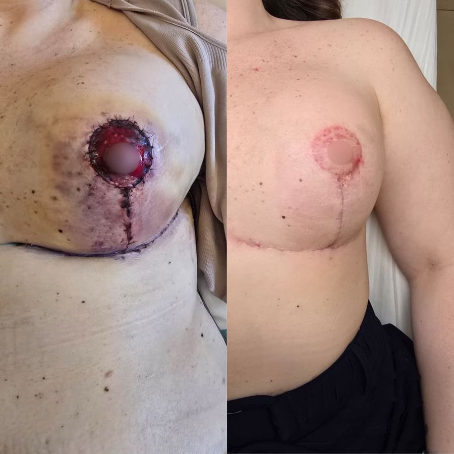
ANTESDEPOIS
Instituto no Calhau · São Luís – MA
Seu pós-operatório não está evoluindo como deveria? Uma complicação não significa que o resultado está perdido.
Sou a Lutiane Carvalho, enfermeira especialista em cicatrização avançada. Cicatrizo feridas com ciência, técnica e acolhimento e acompanho de perto a sua recuperação, da prevenção ao manejo de complicações.
Agendar minha avaliação5,0 ★★★★★86 avaliações no Google
Pós-operatóriode cirurgia plástica e feridas
Alta tecnologialaser, ozônio, termografia e PRF
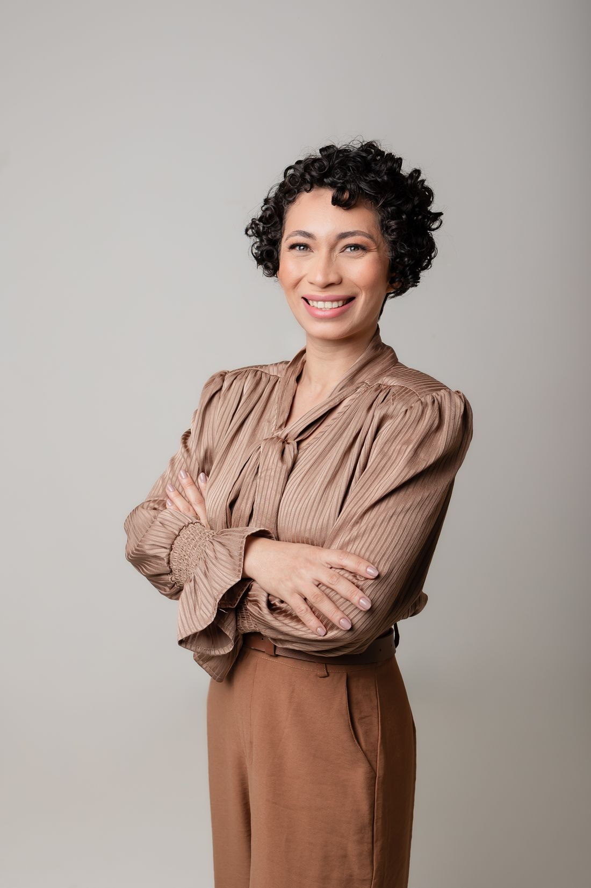
Instituto de
Cicatrização Avançada
Cicatrização Avançada
Depoimentos de quem viveu essa recuperação
Pacientes contam como foi o acompanhamento com a Lutiane
Antes e depois de algumas das minhas pacientes
Imagens reais de feridas e complicações tratadas no instituto.
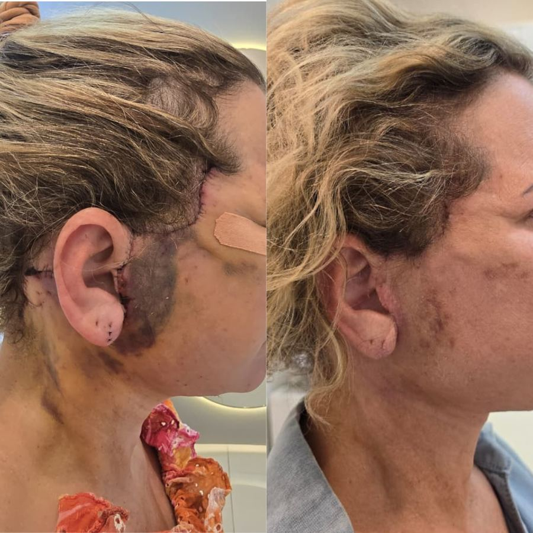
ANTESDEPOISComplicação após lifting facial
Caso real · Instituto Lutiane Carvalho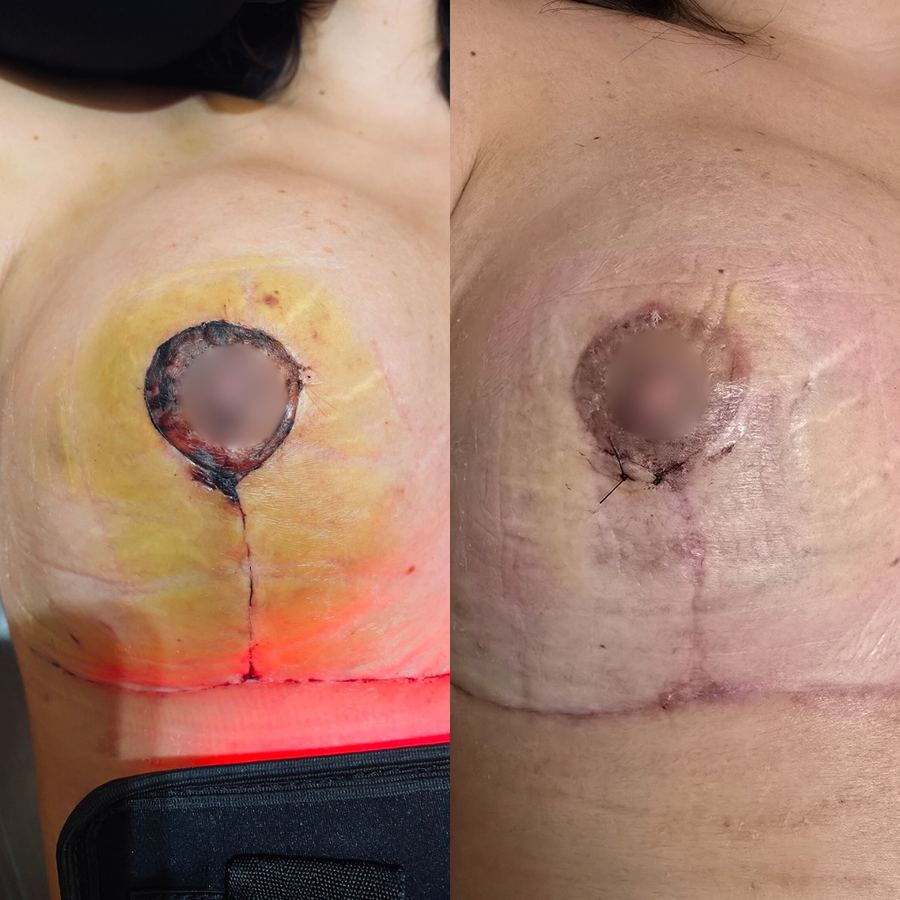
ANTESDEPOISSofrimento tecidual em mamoplastia
Caso real · Instituto Lutiane Carvalho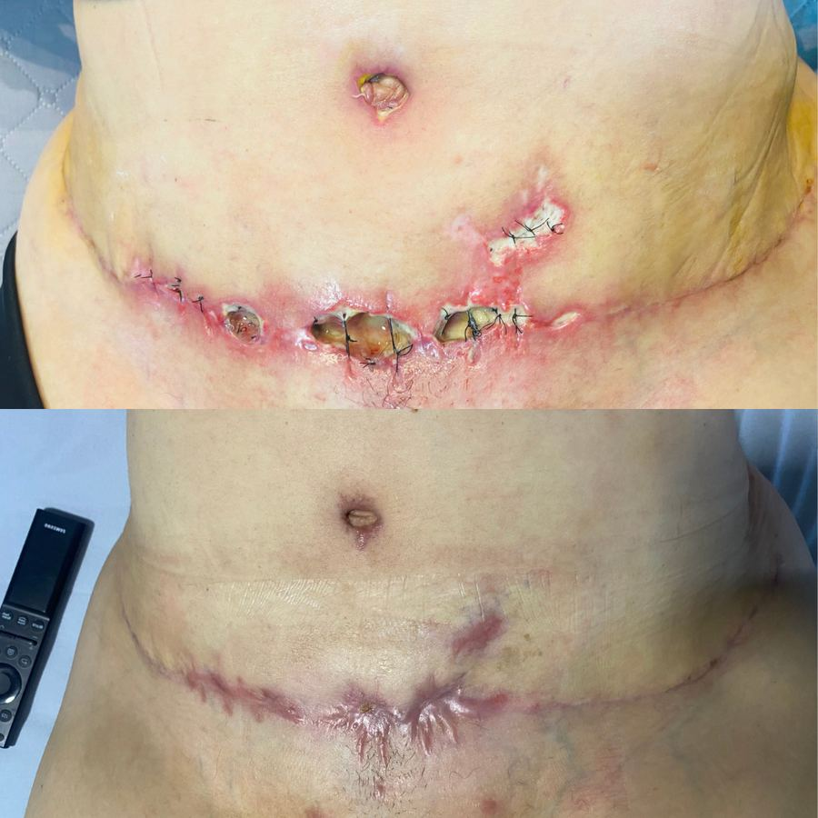
ANTESDEPOISDeiscência após abdominoplastia
Caso real · Instituto Lutiane Carvalho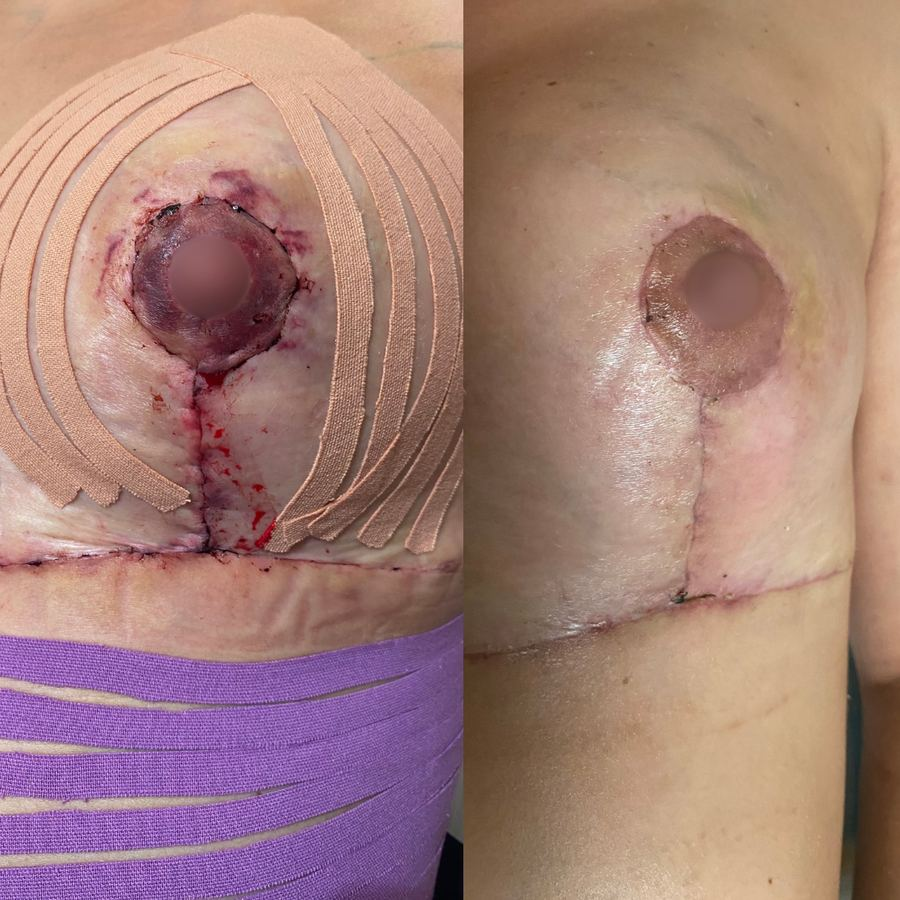
ANTESDEPOISFerida operatória em mama
Caso real · Instituto Lutiane Carvalho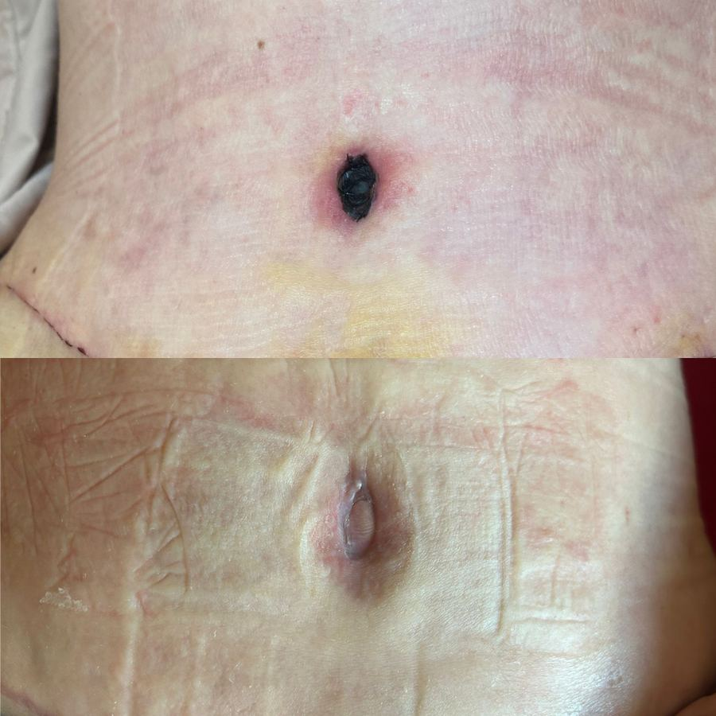
ANTESDEPOISNecrose em cicatriz umbilical
Caso real · Instituto Lutiane CarvalhoCada caso é único e os resultados variam de pessoa para pessoa.
Especialista em cicatrização avançada e feridas complexas
Laserterapia, ILIB, ozonioterapia e terapia regenerativa (PRF/PRP)
Termografia clínica para uma avaliação mais precisa
Cuidado humanizado: você não é só uma ferida, é uma história
Como posso te ajudar
Acompanhamento especializado em cada etapa da sua recuperação
Pós-operatório de cirurgia plástica
Mamas, abdome, lipo e face. Controle do edema, cuidado com as cicatrizes e acompanhamento próximo até a alta.
Complicações cirúrgicas
Necrose, deiscência, seroma e sofrimento tecidual, com conduta individualizada para preservar o resultado da sua cirurgia.
Feridas que não cicatrizam
Feridas operatórias, traumáticas e de difícil cicatrização, com coberturas especiais e terapias que aceleram o processo.
Pós-parto e cesárea
Taping e cuidados com a cicatriz, para você se sentir mais segura ao sentar, caminhar e cuidar do seu bebê.
Pós-operatório de face
Lifting facial, deep plane e papada, com talas faciais específicas e acompanhamento detalhado da cicatrização.
Planejamento antes da cirurgia
Um bom pós-operatório começa antes da cirurgia. Planeje sua recuperação com quem vai cuidar de cada detalhe.
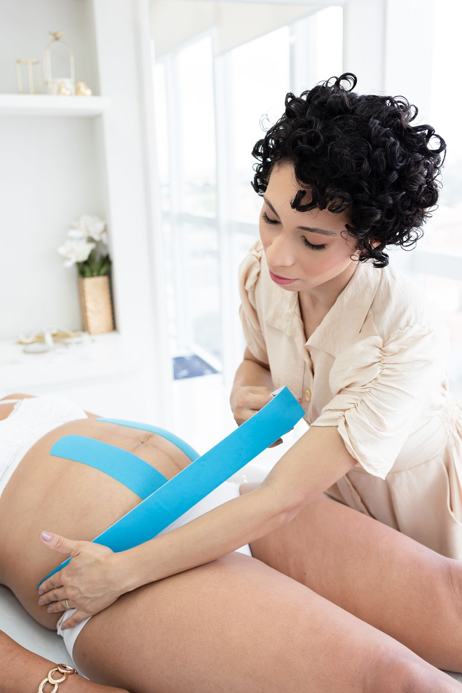
Atenção
Sinais de que o seu pós-operatório precisa de avaliação
- Mudança na coloração da pele: áreas arroxeadas, escurecidas ou pálidas que não melhoram.
- Dor que aumenta em vez de diminuir com o passar dos dias.
- Inchaço sem controle, regiões endurecidas ou acúmulo de líquido (seroma).
- Pontos inflamados, vermelhos ou começando a abrir.
- Secreção, odor ou uma cicatrização que parou de evoluir.
Quanto antes uma alteração é identificada, mais cedo conseguimos definir a conduta certa. Não espere piorar.
Quero uma avaliaçãoComo o tratamento funciona na prática
Cada cicatrização tem seu tempo, sua história e suas necessidades. Por isso, cada paciente recebe um plano próprio.
Avaliação criteriosa
Escuta, exame clínico detalhado e, quando indicado, termografia para identificar alterações antes que fiquem visíveis.
Plano individualizado
Definição da conduta para o seu caso, respeitando o momento da cicatrização e a resposta do seu tecido.
Tecnologia + técnica
Coberturas especiais, laserterapia, ILIB, ozonioterapia, taping e terapia regenerativa, sem abrir mão do cuidado manual.
Acompanhamento até a alta
Reavaliações constantes e orientação entre as sessões, para você nunca se sentir sozinha nesse processo.
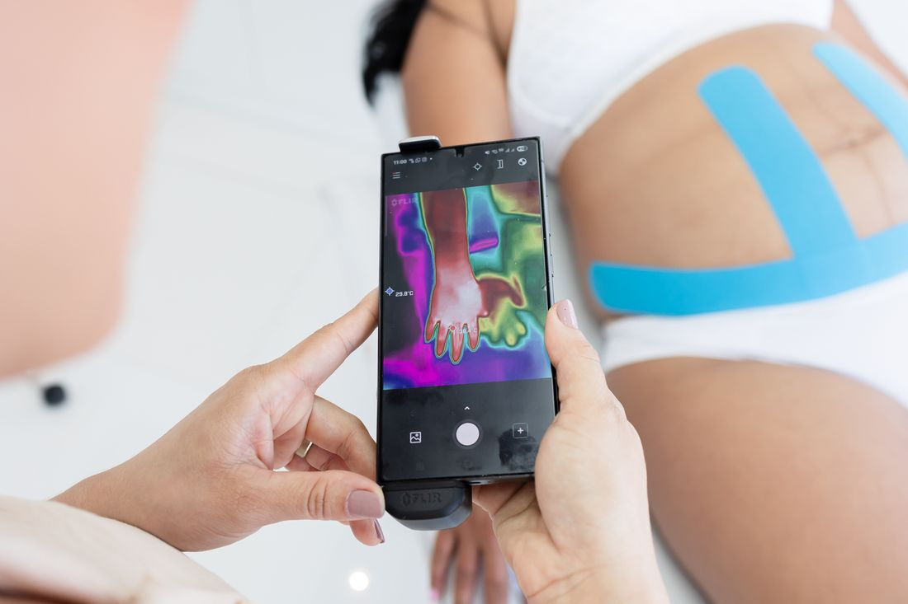
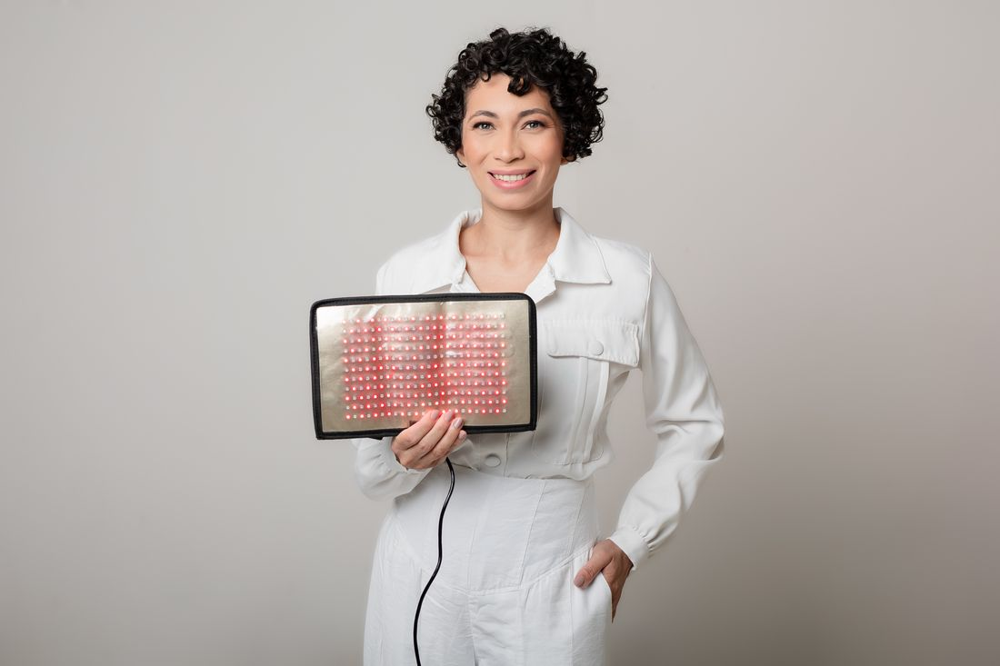
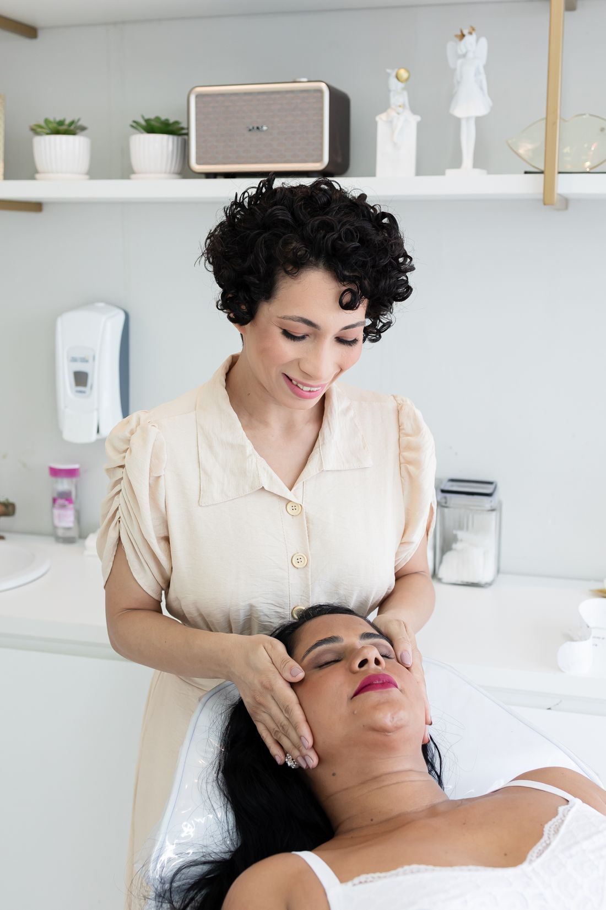
LaserterapiaILIBOzonioterapiaTapingTermografia clínicaPRF / PRPCoberturas especiaisTalas faciaisDrenagem
O que você ganha com um pós-operatório bem conduzido
Recuperação mais rápida
Evolução acompanhada semana a semana, com segurança.
Menos dor e inchaço
Mais conforto para retomar a rotina.
Prevenção de complicações
Sinais identificados cedo, antes de virarem problema.
Suporte de verdade
Orientação próxima durante todo o processo.
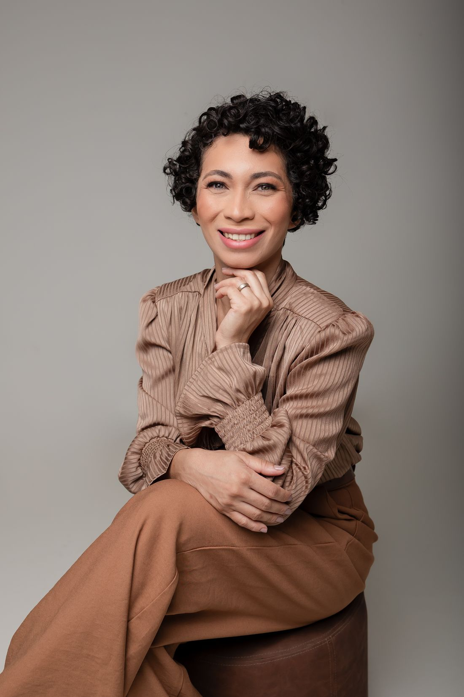
Prazer, Lutiane
Conheça quem vai cuidar de você
Sou enfermeira especialista em cicatrização avançada e, depois de acompanhar inúmeros pós-operatórios e conduzir casos desafiadores, realizei um sonho que nasceu ao lado dos meus pacientes: o Instituto Lutiane Carvalho. É um espaço pensado para unir ciência, tecnologia, experiência e, acima de tudo, acolhimento.
Acredito que um bom pós-operatório começa no conhecimento. Por isso, estou sempre em atualização: capacitações em terapia regenerativa (PRF/PRP), enfermagem regenerativa, biópsia de feridas para diagnóstico microbiológico e acompanhamento de cirurgias no centro cirúrgico para entender cada detalhe que influencia a sua recuperação.
- Palestrante no Workshop "Feridas que Faturam", do COREN-MA
- Especialista em pós-operatório de cirurgia plástica e manejo de complicações
- Termografia clínica, laserterapia, ILIB, ozonioterapia e PRF no próprio Instituto
Fora do consultório, sou mãe do Adryan, esposa, filha e irmã. Amo correr e coloco Deus à frente de tudo. A profissional que você conhece só existe por causa da pessoa que está por trás do jaleco.
"Entre a cirurgia e o resultado, existe o cuidado certo."
O que dizem as pacientes
5,0
★★★★★
86 avaliações no Google
B
Bruna MatosPós-operatório de cirurgia plástica
Desde o primeiro atendimento, ela me passou muita segurança, tranquilidade e profissionalismo. Acompanhou de perto a evolução das minhas cicatrizes e conduziu todo o processo com muito conhecimento, carinho e atenção aos detalhes. Recomendo de olhos fechados!
J
José BonifácioPontos inflamados
Chegamos com os pontos da cirurgia totalmente inflamados e com risco de abrir, e em 2 dias de tratamento os pontos estavam totalmente desinflamados e sequinhos. Recuperação acelerada com uso de ozônio e demais procedimentos.
R
Rebeca TavaresPós-operatório complexo
Meu pós-operatório tinha tudo para ser problemático por conta da complexidade, mas tudo fluiu super bem. A dra. Lutiane personalizou meu atendimento com os equipamentos mais modernos, sem deixar de lado o famoso mão na massa, com muita simpatia e empatia.
A
Analice LopesPós-operatório com intercorrência
Lutiane é maravilhosa, super atenciosa, disponível e experiente. Foi fundamental no meu pós-operatório! Sempre me passou tranquilidade e segurança, e o processo, mesmo com intercorrência, ficou mais leve. Super indico!
M
Mayara CamposCesariana e laqueadura
Os tapes me ajudaram a ter mais segurança na hora de sentar e caminhar, mesmo dois dias depois da cesariana. Mesmo de longe, ela me respondia e orientava pelo WhatsApp. Incrível como mudou todo o meu pós-operatório. Recomendo para todas as mulheres!
R
Rayla SampaioFerida após acidente
Desde o momento em que Pedro se machucou, ela cuidou de cada detalhe com tanto profissionalismo, dedicação e carinho: a limpeza, os curativos, todo o acompanhamento após o acidente e os cuidados com a cicatriz.
E
Elizabeth NaderPaciente
A Lutiane é uma excelente profissional. O espaço para atendimento é maravilhoso, de muito bom gosto, com ótimas tecnologias, além de um ótimo atendimento.
V
Vera S. M.Incisão extensa
Devido à grande incisão da minha cirurgia, o seu acompanhamento foi essencial para que eu tivesse um pós-operatório tranquilo e sem intercorrências. Os horários foram cumpridos rigorosamente. Recomendo e super indico.
L
Luciana AlvesPaciente do Rio de Janeiro
Excelente profissional. Vim do Rio de Janeiro e vou voltar super satisfeita. Muito cuidadosa, atenciosa, educada, cuida de cada detalhe. Muito obrigada por tudo!
Mensagens que recebo das minhas pacientes 🤎
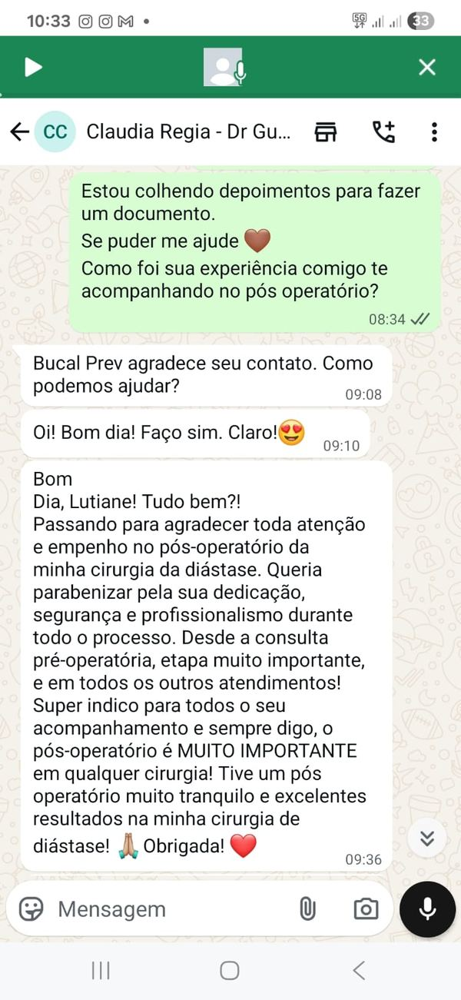
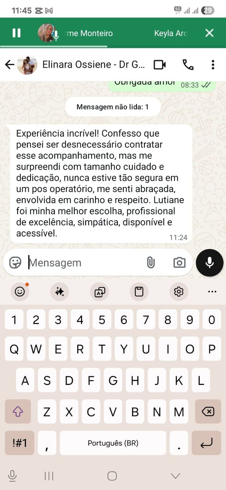
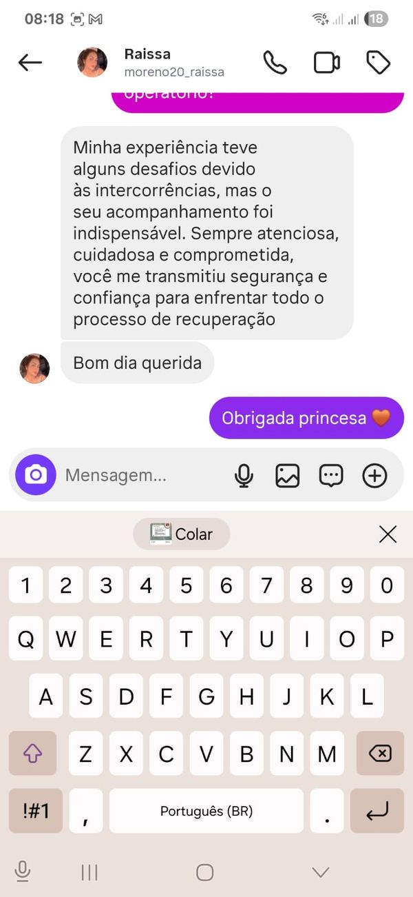
Quanto custa um pós-operatório mal conduzido?
Muitas vezes, o custo aparece em forma de complicações que poderiam ser evitadas, recuperações mais longas e cicatrizes que poderiam ter evoluído melhor. Cuidar do pós não é um detalhe: é parte do sucesso da sua cirurgia.
Sobre o investimento: cada plano é montado de acordo com o seu caso. Me conte pelo WhatsApp o que você precisa que eu te explico os valores e as opções de acompanhamento.
Dúvidas frequentes
Quando devo começar o acompanhamento pós-operatório?
O ideal é planejar o pós-operatório junto com a cirurgia e começar nos primeiros dias depois do procedimento. Assim, acompanhamos cada fase da cicatrização e conseguimos identificar qualquer alteração logo no início.
Tive uma complicação. Ainda dá tempo de tratar?
Muitas complicações, como necrose, deiscência e seroma, podem ter uma boa evolução quando avaliadas e tratadas adequadamente. Nem sempre o resultado está perdido: às vezes falta a conduta certa, no momento certo. Quanto antes você buscar avaliação, melhor.
Quais tecnologias são usadas no tratamento?
Conforme a indicação de cada caso: laserterapia, ILIB, ozonioterapia, taping, termografia clínica, terapia regenerativa (PRF/PRP), coberturas especiais e talas faciais para o pós-operatório de face e papada.
A laserterapia dói?
Não. A laserterapia é um recurso confortável e indolor, que complementa o tratamento e ajuda na cicatrização e no controle da dor e do inchaço.
Vocês atendem pós-parto e cesárea?
Sim. O taping e os cuidados com a cicatriz trazem mais segurança e conforto para sentar, caminhar e retomar a rotina com o bebê.
Atende pacientes que vêm de outras cidades?
Sim. Recebo pacientes de outras cidades e estados que vêm operar em São Luís. Entre em contato para organizarmos o seu acompanhamento.
Onde fica o Instituto?
Ed. Marcus Barbosa Intelligent Office, sala 505, Av. dos Holandeses, 6916, Calhau, São Luís (MA).
Quanto custa o acompanhamento?
O valor depende do seu caso e do plano de tratamento indicado. Me chame no WhatsApp, conte um pouco sobre a sua cirurgia ou ferida e eu te passo todas as informações.
Não espere piorar
Entre a cirurgia e o resultado, existe o cuidado certo.
Se você vai operar ou percebeu que sua cicatrização não está evoluindo como deveria, agende sua avaliação. Vou cuidar de você com ciência, técnica e acolhimento.